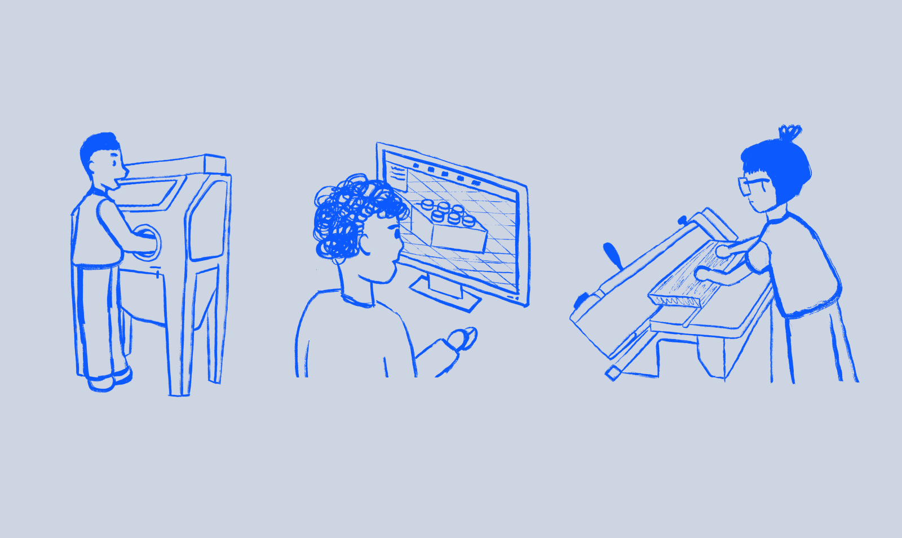
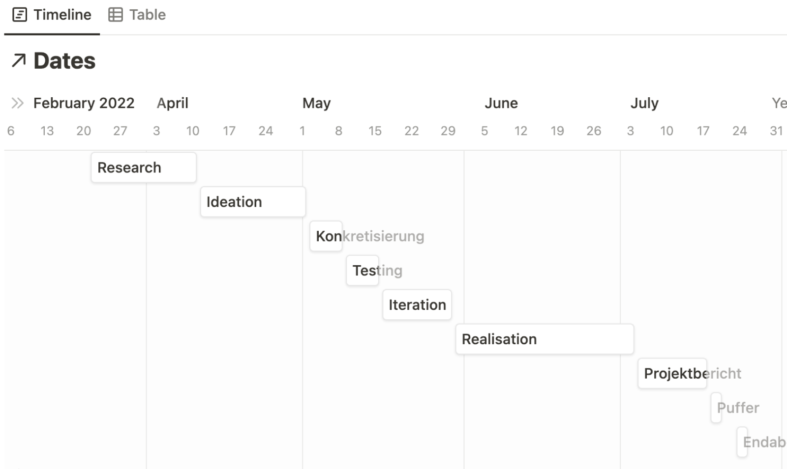
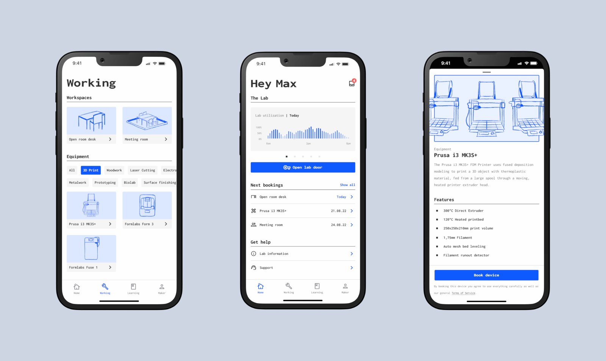

Pham Tina Nguyen
Maker Port is a booking application for heavy machinery located in the University of Applied Sciences. The Application is for students of the university wanting to use the machinery for start ups and their own small projects.
We were asked to develop a product that would make a comprehensive booking process easy for student to use the premises and machinery. Our application should make the booking process easy and adaptable to individuals. Using artificial intelligence, the system would automatically calculate times for prepping and cleanup, so that all users can smoothly go through their booking and work.
With this project, we worked closely with university staff as well as the developer team to create this application. We started gathering data through benchmarking competitors, interviews with professors and collecting data of the amenities of the maker port space. Through weekly workshops we continued to develop our Low-Fidelity Wireframes, tested them with users and went through multiple iterations before coming to our High-Fidelity Prototype. We worked with our Dev-Team simultaneously and which made the project go very well.
